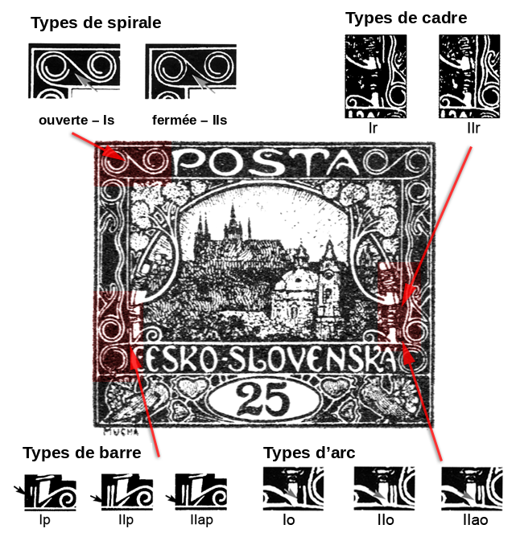

Types du cinquième dessin
Le catalogue caractérise le cinquième dessin comme une grande inscription blanche sur fond de couleur, sans buisson ni soleil, avec un dessin plus grand de l’église Saint-Nicolas et un ornement différent dans l’encadrement de l’image. C’est à mon sens le plus intéressant à collectionner : la plupart des valeurs qui l’ont utilisé présentent, selon les positions, différentes combinaisons de types de plusieurs éléments du dessin.
Les types se répartissent en quatre catégories :
En cliquant sur les différents types, vous accédez à leur description ainsi qu’à l’affichage des positions correspondantes. L’endroit où chaque élément se trouve dans le dessin est indiqué par le schéma suivant :

Pour la valeur 15h, le traitement est plus détaillé — avec la liste des positions planche par planche — sur la page Les types du cinquième dessin sur le 15h.